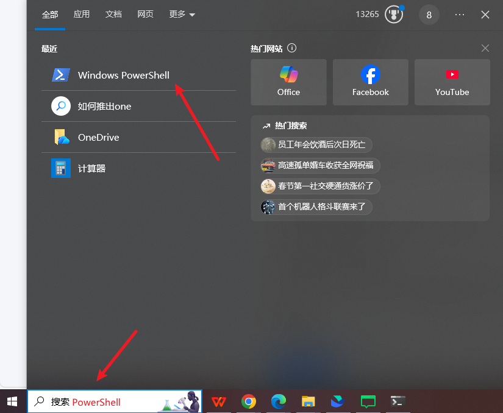
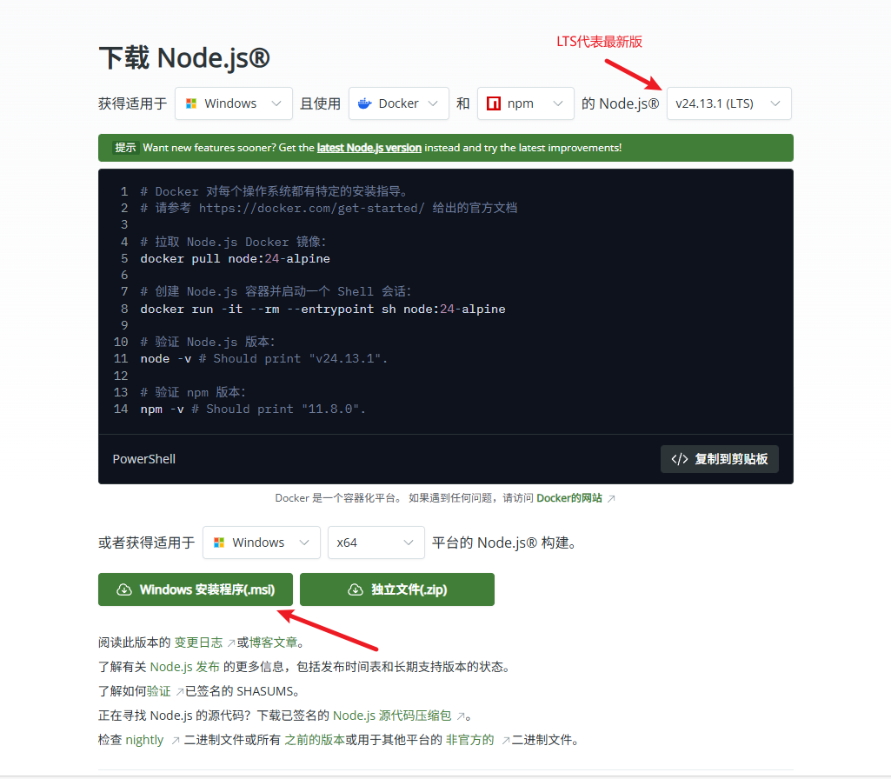
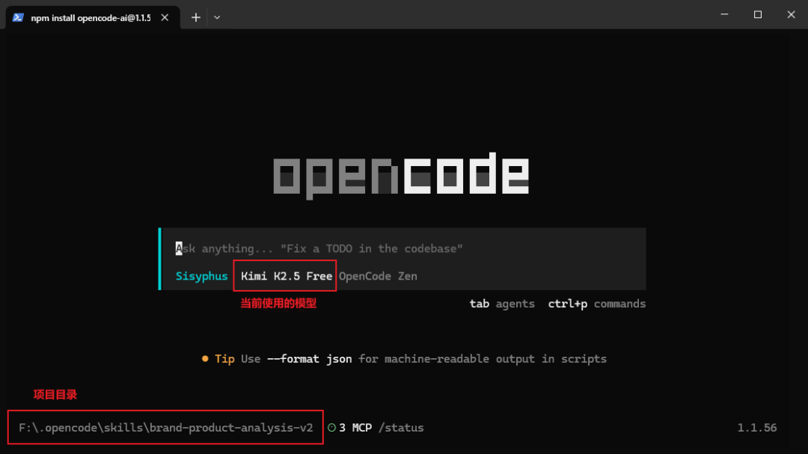
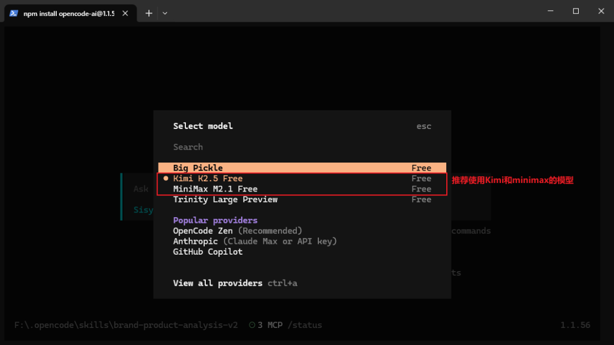
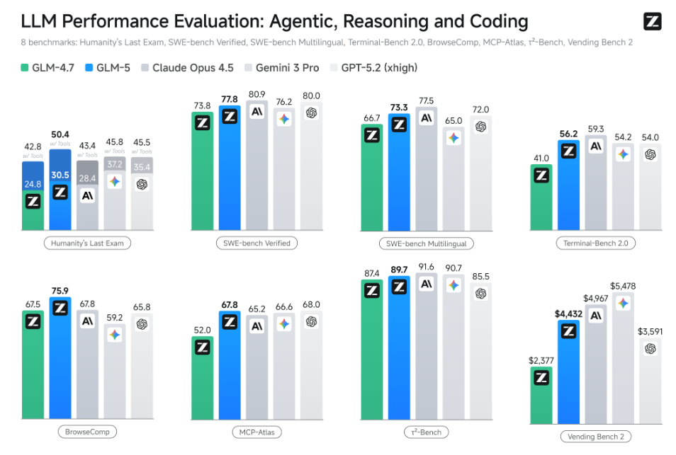
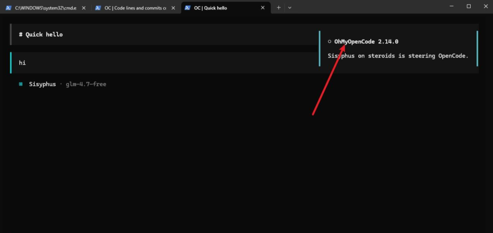

第一：它是开源项目，无论怎样都不会收到律师函和账号风控 第二：安装简单，且内置了多款免费模型（Kimi2.5、minimax2.1） 第三：支持桌面端应用（非技术人员友好）
多AI模型协作：可以同时调用多个AI模型协同工作 智能体系统(Agents)：内置多个专业智能体（如frontend-ui-ux-erngineer、 oracle等） 提示词优化：自动优化你给AI的指令（这点很实用） 后台任务管理：可以并行执行多个任务

winget --version #检查 winget 是否可用，如果显示版本号，就可以继续。winget install --id Git.Git -e --source winget #安装 Git，安装过程会自动弹出安装程序，一路 Next 即可。
可以“环境”理解成：一个工具仓库
环境A仓库里有锤子、钉子
环境B仓库里有电钻、扳手
你的程序像一个工人：
在A仓库工作 → 就可以使用锤子、钉子，但却用不了B仓库的电钻、扳手
npm 指令，从Node.js 的包管理器中提取Opencode包。https://nodejs.org/zh-cn/download
npm install -g opencode-ainpm 是 Node.js 的包管理器 -g 表示全局安装 安装完成后，可以在任何目录使用 opencode 命令
opencode --version1.1.5 或更高），恭喜你，OpenCode 安装成功了！opencode
Ctrl + P 打开命令面板，选择 “switch model”，然后可以切换模型

打开 PowerShell 直接运行以下命令：
npx oh-my-opencode installopencode